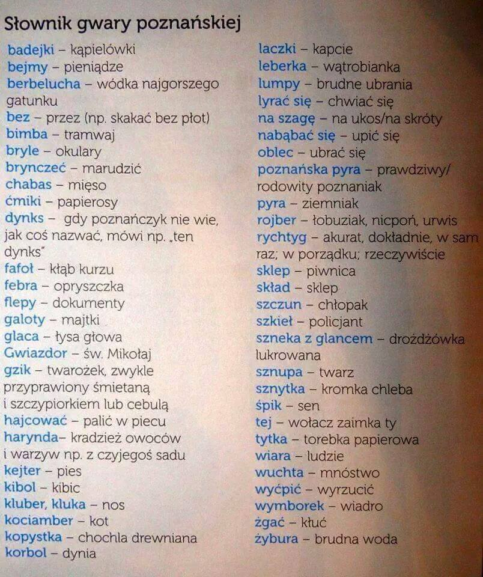

Historia magistra vitae
Poznań, który znamy z dnia dzisiejszego, przeszedł bardzo długą drogę a momentem kulminacyjnym zdaje się koniec II WŚ, podczas której wojenne zniszczenia dotknęły zarówno kulturę i sztukę, ale również całą infrastrukturę miasta. Dlatego też zdecydowano się niemal od razu na dynamiczną odbudowę miasta. Jednak pomimo wyzwolenia od niemieckich wpływów Polacy nadal byli w pewien sposób zależni od ZSRR. Świadczy o tym chociaż specłagier NKWD nr 2, w którym to przetrzymywano więźniów politycznych, żołnierzy lub nawet wyższych oficerów AK. Od praktycznie początku PRL-u w Poznaniu odbywały się protesty robotnicze, których głównym motywem było niezadowolenie społeczne z polityki socjalistycznej prowadzonej przez władzę. Efektem tego były wydarzenia z roku 1956, w którym to miał miejsce jeden z największych strajków tamtego okresu. Wybuchł on w zakładach przemysłu metalowego Hipolita Cegielskiego i szybko rozprzestrzenił się na inne rejony Poznania. Władze nie próżnowały i to stłumienia strajku użyło 10 tys. żołnierzy i 400 czołgów. Powyższe zdarzenie tak naprawdę było początkiem strajków i innych form protestu przeciwko władzy, które wprowadziły system w jeszcze głębszą fazę kryzysu. Kulminacyjnym momentem był rok 1989, w którym to system całkowicie się załamał i można powiedzieć, że Polska stała się wolnym państwem. Jednak przed społeczeństwem stało jeszcze jedno wyzwanie, a mianowicie przeorganizowanie całego państwa, co umożliwiłoby dogonienie państw zachodnich w aspektach gospodarczych i komforcie życia. Na pewno do przyspieszenia tego procesu przyczyniło się wstąpienie Polski do UE w 2004 roku. Otworzyło to nowe drogi na rozwój nie tylko dla państwa ale również lokalnych biznesów ludzi, którzy mogą liczyć na wsparcie finansowe z tej właśnie organizacji. Poznań to miasto o bogatej historii i warto o niej pamiętać. Oferuje wiele doznań pomimo wywiezionych i zniszczonych pamiątek historycznych i kulturalnych zarówno przez Niemców i ZSRR.
Gwara poznańska sięga korzeniami czasów zaboru pruskiego, kiedy to próbowano zgermanizować Polaków głównie na terenach wielkopolski. Dlatego też język niemiecki był obecny w urzędach i szkołach. Swój cel Niemcy częściowo osiągnęli w 1887 roku, kiedy to usunięto język Polski ze szkolnictwa. Sytuacja ta zmieniła się po II WŚ w momencie powrotu wielu wysiedlonych ludzi do Poznania gdzie mowa przyjezdnych zmieszała się. Jednak wśród młodych ludzi gwara poznańska staje się powoli czymś obcym lub niezrozumiałym, często kojarzą pewne zwroty lecz nie są pewni jego znaczenia, co jest negatywnym zjawiskiem zważając na wartość jaką niesie za sobą gwara - upamiętnia trudne historyczne czasy dla Polaków i jest rodzajem pewnego dziedzictwa kulturowego i językowego. Warto również wspomnieć, że wiele zwrotów gwary przebiło się na skalę krajową między innymi poznańskie “pyry”.
